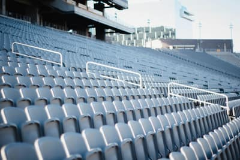

Stadium Guide & Policies
Clear-bag policy, prohibited items, gate times, and security screening explained.
View policiesClear bag rules, parking lots, light rail routes, traditions, and the fall schedule all in one place, so you spend less time searching and more time cheering.
Check Stadium Policies
New to Tempe on gameday or a lifelong fan double checking the rules? Jump straight to what you need.
Clear-bag policy, prohibited items, gate times, and security screening explained.
View policiesParking lots, prices, accessible options, and Valley Metro light rail routes to campus.
Plan your tripHome and away matchups with dates and kickoff times for the season.
See the scheduleFrom the Curtain of Distraction to Tillman Tunnel learn the rituals that make it special.
Explore traditionsCommon questions about tickets, re-entry, weather, and how to reach us.
Get answersStart with the Stadium Guide, then check Transportation to pick parking or the light rail.
Start hereThe numbers fans ask about most, before they even leave the house.
Gameday logistics for ASU football are usually scattered across five different sites. This hub pulls the essentials security rules, parking, transit, and schedules into one lean, fast loading resource built for students, alumni, local fans, and visitors heading to Mountain America Stadium.

Start with the clear bag rules and gate times so you know what makes it through security and when the gates open. Next, pick your route in, whether that is parking on site or hopping the light rail from downtown Tempe or Mesa. Check where your gate is and what is allowed inside so there are no surprises at the checkpoint. Spending five minutes here saves a scramble at the gate and gets you to your seat, relaxed and ready, before kickoff.
Read the stadium guide